Dynamic Programming
James Brusey
26 January 2026
Dynamic Programming
Motivation: problems with overlapping structure
- Many problems ask for the best way to transform, align, or optimise
- Naive recursion repeats the same subproblems many times
- We need a systematic way to reuse partial results
What is dynamic programming?
- A method for solving problems with:
- Optimal substructure
- Overlapping subproblems
- Solve each subproblem once
- Store and reuse its solution
Running example: Edit distance
- Given two strings \(x\) and \(y\)
- Allowed operations:
- Insert
- Delete
- Substitute
- Goal: minimum number of operations to transform \(x\) into \(y\)
Why naive recursion is inefficient
- Many ways to transform prefixes of the strings
- Same prefix pairs are recomputed again and again
- Exponential blow-up
Subproblem definition
- Let \(D(i, j) =\) edit distance between
- first \(i\) characters of \(x\)
- first \(j\) characters of \(y\)
- We want \(D(|x|, |y|)\)
Base cases
- \(D(0, j) = j\) (\(j\) insertions)
- \(D(i, 0) = i\) (\(i\) deletions)
Recurrence relation
- If \(x[i] = y[j]\): \[ D(i, j) = D(i-1, j-1) \]
- Else: \[ D(i,j) = 1 + \min\big(D(i-1,j), D(i,j-1), D(i-1,j-1)\big) \]
DP: Edit distance between kitten and sitting
- Start from base cases
- Fill row by row or column by column
- Each cell uses only already-computed neighbours
DP: Edit distance between kitten and sitting
DP: Edit distance between kitten and sitting
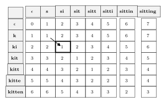
DP: Edit distance between kitten and sitting
Why this is dynamic programming
- Each subproblem D(i, j) solved once
- Results stored in the table
- Global optimum built from optimal sub-solutions
Time and space complexity
- Table has |x| × |y| cells
- Each cell computed in constant time
- Total time: O(|x|·|y|)
Key takeaways
- Identify subproblems over prefixes
- Write a recurrence
- Use a table (array) to store partial results
- DP works best if you can order the computation so that you have the correct value for the sub-problems already
Policy evaluation (prediction)
Why study Dynamic Programming?
- DP assumes perfect model and is computationally expensive
- Still important theoretically, though
- Basis for understanding
Expectation (reminder)
- Expected value is the average outcome of a random event given a large number of trials
- Where all possible values are equally likely, this is simply the mean of possible values
- Where each \(x_i\) occurs with probability \(p(x_i)\), we have the sum \[ \mathbb{E}\left[ x \right] = \sum_{i}{p({x_i}) x_i} \]
- Quick quiz: what's the expected value of a fair, 6-sized dice?
Expectation with a subscript?
- When we have a subscript, that means according to that probability measure \[ \mathbb{E}_y[x] = \sum_i p_y(x_i)x_i \] where \(p_y\) is a probability measure for \(x\) that might differ from the sampling probability.
Bellman optimality equation
- Dynamic programming is based on solving Bellman's optimality equation
\[ v_*(s) = \max_a \mathbb{E}\left[ R_{t+1} + \gamma v_*(S_{t+1}) | S_t=s, A_t=a \right] \]
- why is this equation so important and what do the variables mean?
Policy evaluation (prediction)
Evaluation asks:
- Given a policy \(\pi\), what is the expected value \(v_\pi\) of each state \(s\)? \[ v_\pi(s) \doteq \mathbb{E}_\pi[G_t | S_t=s] \]
Policy evaluation (2)
- We can substitute for the \(G_t\) based on \[ G_t \doteq R_{t+1} + \gamma R_{t+2} + \gamma^2 R_{t+3} + \cdots \] or more simply \[ G_t = R_{t+1} + \gamma G_{t+1} \]
Policy evaluation (3)
We should get \[ v_\pi(s) = \sum_a \pi(a|s) \sum_{s',r} p(s',r|s,a)\left[r+\gamma v_\pi(s')\right] \] where
- \(p(s',r|s,a)\) is the transition probability
- \(\pi(a|s)\) is the probability of taking action \(a\) when in state \(s\)
- \(r\) is the immediate reward
- \(\gamma\) is the discount factor
Policy evaluation (4)
For this simple recycle robot, write down the set of equations for \(v_\pi(s)\) assuming that \(\pi\) is a uniform distribution over actions.
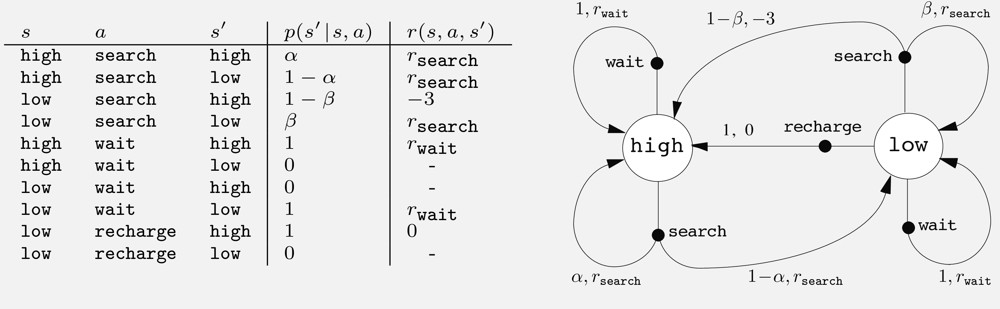
Policy evaluation (5)
Here is the equation for \(v_\pi(\mathrm{high})\):
LP solution
Note that we have equations in the form: \[ v(a) = k_1 v(a) + k_2 v(b) + k_3 \] which can be converted into \[ -k_3 = (k_1 - 1) v(a) + k_2 v(b) \] or \[ \begin{pmatrix} -k_3 \\ \vdots \end{pmatrix} = \begin{bmatrix} (k_1 - 1) & k_2 \\ \vdots & \vdots \end{bmatrix} \mathbf{v} \]
Which can be solved by inverting the matrix. This will be the subject of a lab exercise
LP solution
- To be precise \[ (I - \gamma P^\pi) V^\pi = r^\pi \]
- With solution, \[ V^\pi = (I - \gamma P^\pi)^{-1} r^\pi \]
Approximate methods
- It is also possible to find the solution iteratively by starting off with some guesses for \(v\) and updating according to the equations.
- This approach forms the basis of many other methods and for large MDPs we will never attempt using LP
Example - small gridworld
- Undiscounted episodic MDP with \(\gamma = 1\)
- 4 x 4 grid with top left and bottom right being terminal states
- Reward is \(-1\) until terminal state
- We want to find the value \(V\) for a uniform random policy
- that is \(\pi(a \mid \cdot) = \frac{1}{4}\) for all \(a\)
Iterative policy evaluation
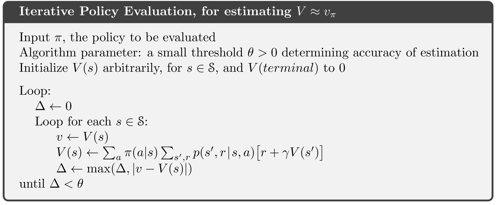
Iterative policy evaluation
Value \(V^\pi_k\) of random policy at step \(k\)
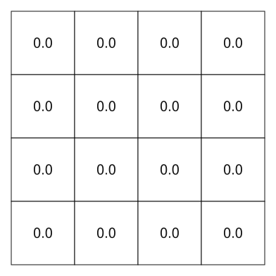
\(k = 0\)
Greedy policy based on this value
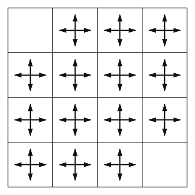
Iterative policy evaluation
Value \(V^\pi_k\) of random policy at step \(k\)

\(k = 1\)
Greedy policy based on this value
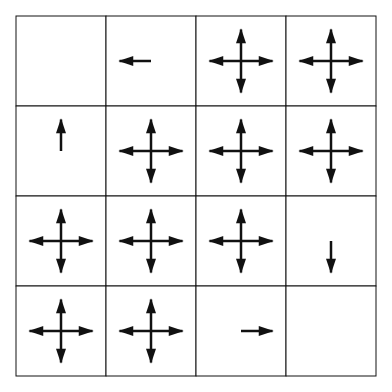
Iterative policy evaluation
Value \(V^\pi_k\) of random policy at step \(k\)
\(k = 2\)
Greedy policy based on this value
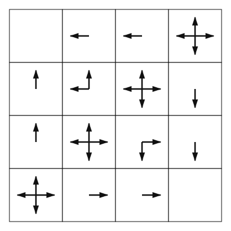
Iterative policy evaluation
Value \(V^\pi_k\) of random policy at step \(k\)
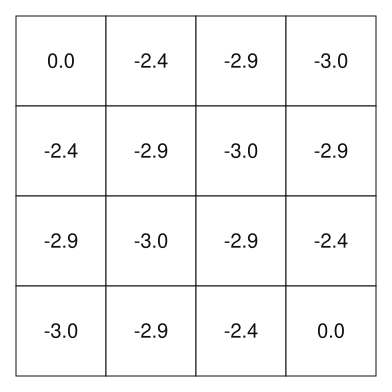
\(k = 3\)
Greedy policy based on this value

Iterative policy evaluation
Value \(V^\pi_k\) of random policy at step \(k\)
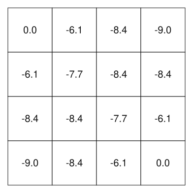
\(k = 10\)
Greedy policy based on this value
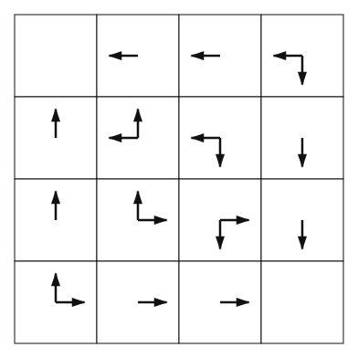
Iterative policy evaluation
Value \(V^\pi_k\) of random policy at step \(k\)
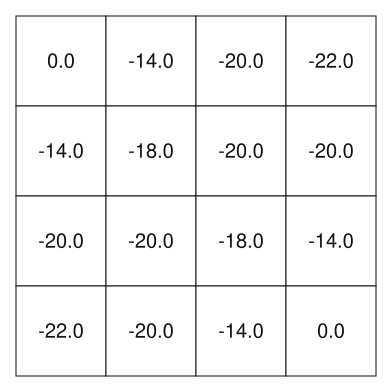
\(k = 10000\)
Greedy policy based on this value

Policy improvement
Policy improvement
- Given that we can evaluate any policy, we can therefore improve it by updating the policy so that it takes the action that maximises the resulting value
- We define the expected value of taking an action \(a\) and then following \(\pi\) from then on \[ q_\pi(s, a) \doteq \mathbb E [R_{t+1} + \gamma v_\pi(S_{t+1}) | S_t = s, A_t = a] \]
- which expands to \[ = \sum_{s',r} p(s',r|s, a) [r + \gamma v_\pi(s')] \]
Policy improvement (2)
- If we can find some \(a\) for which \(q_\pi (s, a) > v_\pi(s)\), then we can improve \(\pi\) by adjusting it to use \(a\)
- If we cannot find any improvement for all states then \(\pi\) must be optimal
- Discuss:
- what aspects of MDPs are relied on to ensure this is true?
Policy iteration
Policy iteration algorithm
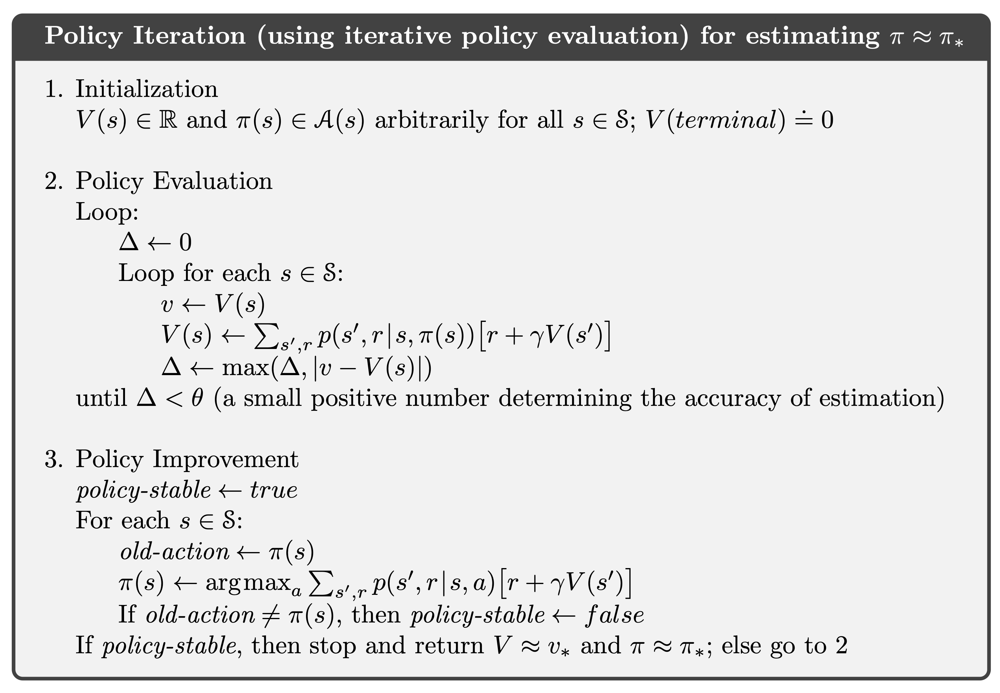
Value iteration
Value iteration
- A problem with policy iteration is the need to perform policy evaluation to some accuracy before improving the policy.
- Value iteration skips finding the policy and just updates the value to the maximum value \[ v(s) \leftarrow \max_a \mathbb{E} [R_{t+1} + \gamma v(S_{t+1}) | S_t=s, A_t =a ] \]
- The algorithm terminates when the size of the updates to any \(v(s)\) is smaller than some threshold